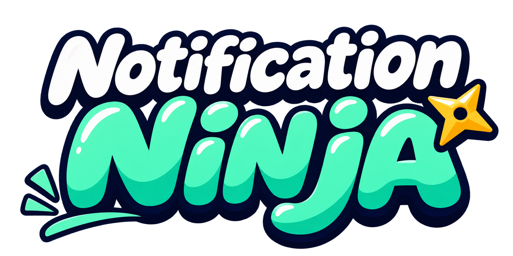

Lernen
Bleib bei deiner Aufgabe. Lernhefte und Pausen helfen; endlose Clips können warten.
Spielwelt-Vorschau · im Dojo spielbar
Erkenne Ablenkungen. Behalte, was gerade wichtig ist. Dein Ninja begleitet dich durch Lernen, Gaming und Schlaf – eine Entscheidung nach der anderen.
Diese Seite informiert nur über das Spiel.
Nach Anmeldung, Registrierung oder Auswahl des Gastmodus gelangst du zuerst in dein Dojo. Dort entscheidest du selbst, welchen Modus du spielen möchtest. Ein Konto synchronisiert deinen Fortschritt.
Hier lernst du die Welten kennen. Gespielt wird erst nach der Wahl „Anmelden“, „Konto erstellen“ oder „Als Gast ins Dojo“ – direkt aus deinem persönlichen Dojo.
Bleib bei deiner Aufgabe. Lernhefte und Pausen helfen; endlose Clips können warten.
Spielwelt-Vorschau · im Dojo spielbarDein Team darf bleiben. Spiele bewusst und entscheide selbst, wann deine Runde endet.
Spielwelt-Vorschau · im Dojo spielbarSchütze deine Ruhe. Lass passende Signale durch und finde ein gutes Ende für deinen Tag.
Spielwelt-Vorschau · im Dojo spielbarAlle drei Situationen sind Teil des Spiels. Diese Karten sind eine Vorschau und starten keine Runde.
Digitale Inhalte sind nicht automatisch gut oder schlecht. Entscheidend ist, ob sie gerade zu deinem Ziel passen.
Lernen, Gaming oder Schlafen: Vor der Runde zeigt NIM dir dein Ziel und ein konkretes Beispiel.
Ziehe mit dem Finger oder der gedrückten Maustaste durch Ablenkungen. Wichtige Dinge lässt du unberührt weiterfliegen.
Nach der Runde wartet eine Entscheidungssituation mit NIMs Erklärung. Du kannst dabei ein Erkenntnis-Siegel sammeln. Aufhören und Pause machen gehören dazu.
Entdecke auf dieser Seite das Konzept. Melde dich an oder besuche dein Dojo als Gast – dort kannst du deine Spielwelt auswählen.
18 Hauptmissionen in drei Kapiteln führen durch Lernen, Gaming und Schlaf. Acht zusätzliche Herausforderungen und drei Bosse warten danach auf dich.
Projektteam: Matteo Müller (Frontend), Kevin Brugger (Backend). Beide programmieren.
Das Spiel lädt dazu ein, digitale Alltagssituationen zu reflektieren. Es stellt keine Diagnosen und ersetzt keine medizinische Beratung.
Im Gastmodus bleiben Fortschritt und Einstellungen in diesem Browser. Bei einer neuen Registrierung speichert der Kontodienst deinen Ninja-Namen, deine private E-Mail-Adresse, sichere Passwort- und Wiederherstellungscode-Hashes, deine Datenschutz-Zustimmung und deinen Spielfortschritt. Deine E-Mail-Adresse wird nicht in der Rangliste angezeigt. Die Wiederherstellung erfolgt mit deinem persönlichen Code; eine E-Mail-Bestätigung wird derzeit nicht angeboten.
Ranglistenergebnisse werden erst veröffentlicht, wenn du sie ausdrücklich teilst. Du kannst dein Konto in den Kontoeinstellungen löschen.
Bei einem gemeinsamen Gerät: Melde dich nach dem Spielen ab. Dein Sitzungsschlüssel wird nur für diese Browser-Sitzung gespeichert.